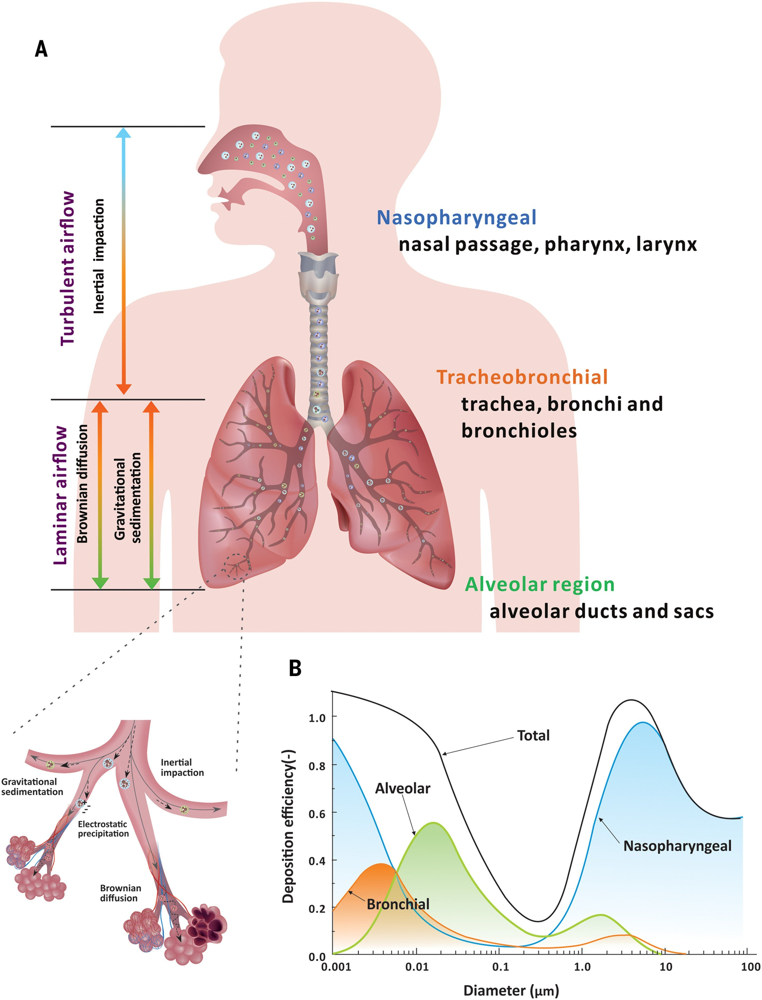

※ 本文は以下のサイトを「DeepL翻訳」（https://www.deepl.com/ja/translator）を利用して機械翻訳しています。
Science, Review Summary, CORONAVIRUS,
"Airborne transmission of respiratory viruses - 呼吸器系ウイルスの空気感染 -",
SCIENCE, 27 Aug 2021, Vol 373, Issue 6558
Chia C. Wang*, Kimberly A. Prather*, Josué Sznitman, Jose L. Jimenez, Seema S. Lakdawala, Zeynep Tufekci, Linsey C. Marr
https://doi.org/10.1126/science.abd9149
https://www.science.org/doi/10.1126/science.abd9149
空気感染のメカニズム
COVID-19のパンデミックは、呼吸器系病原体が宿主間でどのように伝播するかについての論争と未知の問題を浮き彫りにした。従来、呼吸器系病原体は、咳の際に発生する大きな飛沫や、汚染された表面との接触（フォマイト）によって人の間に広がると考えられていました。しかし、いくつかの呼吸器系病原体は、空気の流れに乗って浮遊・移動する小さな呼吸器系エアロゾルを介して拡散することが知られており、感染者からの距離が短い場合や長い場合には、それを吸い込んだ人が感染することもあります。Wangらは、重症急性呼吸器症候群コロナウイルス2（SARS-CoV-2）感染症やその他の呼吸器系病原体の拡散を研究することで得られた空気感染の理解に関する最近の進歩をレビューしている。著者らは、SARS-CoV-2を含むいくつかの呼吸器系病原体では、空気感染が主要な感染形態である可能性があり、空気感染ルートからの感染のメカニズムをさらに理解することで、感染緩和策をより適切に伝えることができるだろうと述べている。-GKA
Structured Abstract
背景
呼吸器系病原体の主な感染経路は、感染者の咳やくしゃみから発生する飛沫への曝露や、飛沫に汚染された表面（フォマイト）への接触であると広く認識されている。空気感染とは、主に感染者から1～2m以上離れた場所で、5以下の感染性エアロゾルや「飛沫核」を吸い込むことと定義されており、このような感染は「珍しい」病気にのみ関係すると考えられてきた。しかし、重症急性呼吸器症候群コロナウイルス（SARS-CoV）、中東呼吸器症候群（MERS）-CoV、インフルエンザウイルス、ヒトライノウイルス、呼吸器合胞体ウイルス（RSV）など、多くの呼吸器ウイルスの空気感染を裏付ける確かな証拠がある。COVID-19のパンデミックでは、飛沫感染、付着物感染、空気感染に関する従来の考え方の限界が明らかになりました。SARS-CoV-2の飛沫感染や付着物による感染だけでは，COVID-19パンデミックで観察された多数の超拡散現象や，屋内と屋外での感染の違いを説明できないことがわかった．COVID-19がどのように伝播するのか、またパンデミックを抑制するためにはどのような介入が必要なのかをめぐる論争により、呼吸器系ウイルスの空気感染経路をより深く理解する必要性が明らかになった。
前進（ADVANCES）
呼吸器系の飛沫やエアロゾルは、様々な呼気活動によって発生します。空気力学的粒子径測定法や走査型移動度粒子径測定法などのエアロゾル測定技術の進歩により、呼気エアロゾルの大部分は5以下であり、呼吸、会話、咳の際に発生するエアロゾルを含め、ほとんどの呼吸活動において1以下であることが示されている。呼気エアロゾルには複数の大きさのモードがあり、これは呼吸器における生成部位や生成メカニズムの違いに関連している。エアロゾルと液滴の区別には、これまで5が用いられてきましたが、エアロゾルと液滴の大きさの区別は、1.5mの高さから5秒以上静止した空気中に浮遊し、通常は放出者から1～2mの距離に到達し（エアロゾルを運ぶ気流の速さに依存する）、吸入できる最大の粒子径を示す100であるべきです。感染者が作るエアロゾルには、感染性のあるウイルスが含まれている可能性があり、小さなエアロゾル（<5）にはウイルスが濃縮されているという研究結果があります。ウイルスを含んだエアロゾルの輸送は、エアロゾル自体の物理化学的特性や、温度、相対湿度、紫外線、気流、換気などの環境因子に影響されます。吸入されたウイルス入りエアロゾルは、気道のさまざまな部位に沈着します。大きなエアロゾルは上気道に沈むことが多いが、小さなエアロゾルは上気道に沈むこともあるが、肺胞の奥深くまで入り込むことができる。換気が感染に与える強い影響、屋内と屋外での感染の違い、十分に立証されている長距離感染、マスクや目の保護具を使用しているにもかかわらず観察されたSARS-CoV-2の感染、SARS-CoV-2の屋内での高頻度のスーパースプレッディング現象、動物実験、気流シミュレーションなどが、空気感染を示す強力かつ明白な証拠となっている。SARS-CoV-2の飛沫感染ははるかに効率が悪く、飛沫が支配的になるのは、個人同士が0.2メートル以内で会話をしているときだけであることがわかっている。エアロゾルと飛沫の両方が感染者の呼気活動中に生成されることがあるが、飛沫は数秒以内に地面や表面に速やかに落下するため、飛沫よりもエアロゾルの方が多くなる。空気感染の経路は、これまで飛沫感染とされてきた他の呼吸器系ウイルスの感染拡大に寄与していると考えられます。世界保健機関（WHO）と米国疾病予防管理センター（CDC）は、2021年にCOVID-19を短距離と長距離の両方で拡散させる上で、ウイルスを含んだエアロゾルの吸入が主な感染様式であることを公式に認めました。
今後の展望
病原体の空気感染は、これまで十分に評価されていませんでした。その理由のほとんどは、エアロゾルの空気中での挙動についての理解が不十分であったことと、少なくとも部分的には、逸話的な観察結果が誤って伝えられていたことによります。飛沫感染や糞尿感染の証拠がないことや、エアロゾルが多くの呼吸器系ウイルスの感染に関与しているという証拠がますます強くなっていることを考えると、空気感染はこれまで認識されていたよりもはるかに広く行われていることを認識しなければなりません。SARS-CoV-2感染について分かったことを考えると、すべての呼吸器系感染症について、エアロゾルによる感染経路を再評価する必要があります。換気、気流、空気ろ過、紫外線消毒、マスクの装着などに特に注意して、短距離と長距離の両方でエアロゾル感染を軽減するための予防措置を講じなければならない。これらの対策は、現在のパンデミックを終わらせ、将来のパンデミックを防ぐための重要な手段です。
図 呼吸器系ウイルスの空気感染に関わるフェーズ。ウイルスを含んだエアロゾル（100 以下）は、まず感染者の呼気活動によって発生し、それが吐き出されて環境中に運ばれます。これらのエアロゾルは、感染力が維持されていれば、潜在的な宿主が吸い込んで新たな感染症を引き起こす可能性があります。飛沫（100 以上）とは対照的に、エアロゾルは空気中に何時間も留まり、吐き出した感染者から1～2m以上離れた場所まで移動し、近距離でも遠距離でも新たな感染を引き起こすことができる。 CREDIT: N. CARY/SCIENCE
Abstract
COVID-19のパンデミックにより、呼吸器ウイルスの感染経路に関する従来の考え方を更新する必要性と、その理解に決定的な知識のギャップがあることが明らかになった。従来の飛沫感染や空気感染の定義は、ウイルスを含んだ呼吸器の飛沫やエアロゾルが空気中を移動して感染に至るメカニズムを説明していない。この総説では、エアロゾルによる呼吸器系ウイルスの感染について、エアロゾルの生成、輸送、沈着に関する最新の知見を紹介するとともに、感染経路として、飛沫・噴霧による沈着とエアロゾルの吸入の相対的な寄与に影響を与える要因について考察している。重症急性呼吸器症候群コロナウイルス2（SARS-CoV-2）の研究によってエアロゾル感染に関する理解が深まったことで、他の呼吸器ウイルスの主要な感染経路を再評価する必要があり、それによって空気中の感染を減らすためのより良い情報に基づいた制御が可能になると考えられます。
本文
呼吸器系ウイルスは、感染者の咳やくしゃみから発生する大きな飛沫が、感染者の目や鼻、口などの粘膜に付着したり（飛沫感染）、感染者が触れた表面に付着して粘膜に移ったり（フォマイト感染）することで感染すると考えられてきた。これらの飛沫は、感染者から1～2メートル以内の地面に落ちると考えられており、多くの公衆衛生機関が呼吸器系ウイルスに感染した人からの安全な距離を推奨する際の重要な前提となっています。一方、あまり一般的ではないと考えられている空気感染は、感染性のエアロゾルや「液滴核」（空気中で蒸発した液滴）を吸い込むことを指し、その大きさは5以下で、感染者から1～2m以上離れた場所を移動すると定義されています。エアロゾルとは、液体、固体、半固体の微小な粒子で、空気中に浮遊しているような状態のものをいう。呼吸器系のエアロゾルは、健康な人でも呼吸器系の感染症にかかっている人でも、呼吸、会話、歌、叫び、咳、くしゃみなど、すべての呼気活動で発生します(1-4)。
これまでの空気感染の定義では、エアロゾルが感染者の至近距離で吸入される可能性も無視されており、吐いたエアロゾルは吐いた人に近いほど濃度が高くなるため、暴露の可能性が高くなります。また、エアロゾルと液滴の大きさの違いは、従来の5ではなく、空気力学的な挙動で区別するため、最近では100に更新することが提案されています（5-7）。具体的には、100は、静止した空気中に5秒以上浮遊し（1.5mの高さから）、感染者から1m以上離れて移動し、吸い込むことができる最大の粒子を表しています。感染者が咳やくしゃみをしたときに発生する飛沫は、0.5m以下の近距離でも感染を伝える可能性がありますが、会話などの呼気活動によって発生するエアロゾルの数やウイルス量は、飛沫に比べてはるかに多くなります(8-10)。エアロゾルは、空気中に滞留したり、換気の悪い空間に蓄積したり、近距離でも遠距離でも吸入されたりするのに十分な大きさであるため、現在の呼吸器疾患対策プロトコルにエアロゾル対策を盛り込むことが急務となっています。COVID-19のパンデミックでは、主に飛沫感染と糞尿感染を防ぐことに重点が置かれてきましたが、空気感染ルートを防ぐための対策を追加するには、より多くの証拠が必要でした。
呼吸器系疾患の蔓延において、異なる感染様式の相対的な重要性をめぐる議論は、何世紀にもわたって行われてきた。20世紀以前は、呼吸器系の感染症は、感染者が放出する「疫病粒子」によって広がると考えられていた（11、12）。1900年代初頭、チャールズ・チャピンは、呼吸器疾患の主な感染経路は接触であり、飛沫感染は接触感染の延長線上にあると主張し、空気感染に関するこのような考え方を否定した（13）。Chapinは、空気による感染に言及すると、人々が怖がって行動しなくなり、衛生習慣が失われることを懸念しました。Chapinは、近距離での感染を飛沫感染と同一視し、エアロゾル感染が近距離でも起こるという事実を無視していました。この根拠のない仮定が疫学研究で広まり(14)、それ以来、呼吸器系ウイルスの感染を抑制するための緩和策は、飛沫やフォミングによる感染を制限することに重点が置かれるようになりました(15)。これらの戦略の中には、エアロゾル感染の抑制にも部分的に有効なものがあり、その有効性が飛沫感染を証明するものであるという誤った結論に至っています。
飛沫感染が主流であると考えられていますが、多くの呼吸器系ウイルスの空気感染を裏付ける確かな証拠があります。ヒトライノウイルス（hRV）（9, 26-28）、アデノウイルス、エンテロウイルス（29）、重症急性呼吸器症候群コロナウイルス（SARS-CoV）（30, 31）、中東呼吸器症候群コロナウイルス（MERS-CoV）（32）、SARS-CoV-2（33-36）など、多くの呼吸器ウイルスの空気感染を裏付ける確かな証拠がある（表1）。
表1. 呼吸器系ウイルスの空気感染。様々な呼吸器系ウイルスの空気感染の代表的な証拠とその基本再生数。ダッシュのついたセルは該当しないことを示す。
家庭を対象としたある研究では、空気感染がA型インフルエンザウイルスの感染の約半分を占めると推定されています（20）。ライノウイルスの感染に関するヒトを対象としたチャレンジ研究では、エアロゾルが主な感染経路である可能性が高いと結論づけられています（26）。ハムスターやフェレットのSARS-CoV-2感染症は、直接接触や飛沫感染による影響を排除するように設計された実験構成において、空気を介して感染することが示されている（33、37、38）。インフルエンザウイルス，パラインフルエンザウイルス，RSV，ヒトメタニューモウイルス，hRVに感染した際の呼吸器排出物を分析したところ，さまざまなサイズのエアロゾル中にウイルスゲノムが存在していることが明らかになった。SARS-CoV-2のRNAが検出され、0.25～4以上のエアロゾルから感染性ウイルスが回収されている（34, 35, 40-44）。インフルエンザウイルスのRNAも、感染者から吐き出された微細なエアロゾル（5以下）と粗いエアロゾル（5以上）の両方で検出されており、微細なエアロゾル粒子に含まれるウイルスRNAの方が多いことがわかっています（23）。実験室での研究によると、エアロゾル化したSARS-CoV-2の半減期は約1～3時間であることが分かっている（45-47）。世界保健機関（WHO）と米国疾病予防管理センター（CDC）は、2021年4月と5月にそれぞれ、ウイルスを含んだエアロゾルの吸入が、近距離と遠距離の両方でSARS-CoV-2を拡散させる主要なモードであることを公式に認めた（48、49）。
呼吸器系病原体の曝露に関する数学的モデリングによると、感染者から2m以内のほとんどの距離では、感染は短距離エアロゾルの吸入によって支配され、会話時には0.2m以内、咳時には0.5m以内にいる場合にのみ飛沫が支配的となる(50)。麻疹ウイルス(16-18)や結核菌(51,52)の感染は、これまで飛沫のみが原因とされてきたが、近距離でのエアロゾルによる感染も含まれているという逸話がある。これまで飛沫感染とされてきた呼吸器系疾患の多くは、空気感染が重要であるか、あるいは支配的であると考えられるため、さらなる研究が必要である。
COVID-19のパンデミックの初期には、麻疹に比べて比較的低い基礎繁殖数（R0）を根拠に、飛沫や付着物が主な感染経路であると考えられていた（53-55）（表1）。R0とは、均一な感受性を持つ集団において、一次感染者が引き起こす二次感染の平均数である。この議論は、空気感染する病気はすべて感染力が強いに違いないという長年の信念の上に成り立っています。しかし、空気感染する病気のR0値は様々であり、その平均値は様々な要因によって変化するため、科学的根拠はありません。例えば、結核（R0、0.26～4.3）は空気感染する義務のある細菌感染症ですが(56)、COVID-19（R0、1.4～8.9）よりも伝達性が低いとされています(57-59)。空気感染に影響を与える要因としては、大きさの異なる呼吸器粒子中のウイルス量、エアロゾル中のウイルスの安定性、各ウイルスの用量反応関係（特定の暴露経路で一定数のウイルスに暴露した場合の感染確率）などが挙げられます。さらに、R0は平均値であり、COVID-19は大きく過剰分散しているため、ある条件の下では感染力が強いことを意味します。疫学調査によると、SARS-CoV-2の場合、10～20％の感染者がその後の感染者の80～90％を占めることがわかっており、二次感染率（曝露した人が感染する割合）の不均一性が浮き彫りになっています（60～63）。
COVID-19に関する研究が進んでいることから、SARS-CoV-2の感染経路は空気感染が圧倒的に多いことが証明されている。この感染経路は、特定の環境条件、特に換気の悪い屋内環境で優勢である（6, 34, 35, 41, 42, 45, 50, 64-68）。これは、換気の影響を受けるのは大きな飛沫や表面ではなくエアロゾルだけであることから、エアロゾルのみが関係しているという観察結果である。さらに、屋内と屋外の感染率の顕著な違いは、空気感染でしか説明できない。なぜなら、換気ではなく重力沈降の影響を受ける大きな飛沫は、どちらの環境でも同じように振る舞うからである(69)。疫学的分析、気流モデルのシミュレーション、トレーサー実験、レストラン（36）、食肉加工工場（70）、クルーズ船（71）、合唱団のリハーサルでの歌唱中（64）、教会での長距離感染（72）などの様々な組み合わせにより、浮遊物や飛沫よりもエアロゾルが最も可能性の高い感染経路であることが示唆されています。これらのイベントに参加したほとんどの人が、同じ汚染された表面に触れたり、感染者の咳やくしゃみから発生した飛沫を至近距離で浴びたりして、感染を引き起こすのに十分なウイルス量に遭遇する可能性は極めて低いです。しかし、これらの屋内イベントに参加するすべての人に共通しているのは、同じ部屋で共有された空気を吸い込んでいることです。スーパースプレッディングイベントに共通するのは、屋内であること、人ごみであること、曝露時間が1時間以上であること、換気が悪いこと、声を出すこと、適切なマスクを着用していないことなどです(36)。飛沫感染は、0.2メートル以内の距離で会話をしている場合にのみ支配的であり（50）、SARS-CoV-2が汚染された表面を介して感染する可能性は低い（73-75）ことを考えると、スーパースプレッディング現象は、エアロゾルを感染経路に含めなければ説明できない。
呼吸器系ウイルスの空気感染を防止するための効果的な指針や政策を確立するためには、そのメカニズムをよく理解することが重要です。空気感染が起こるためには、エアロゾルが生成され、空気中を輸送され、感受性の高い宿主に吸入され、呼吸器に付着して感染が開始される必要があります。ウイルスは、これらの過程で感染力を維持しなければならない。この総説では、ウイルスを含んだエアロゾルの生成、輸送、沈着に関わるプロセスと、これらのプロセスに影響を与える重要なパラメータについて説明し、効果的な感染制御対策を考える上で重要な情報を提供します（図1）。
図1.呼吸器ウイルスの空中感染。ウイルスを含むエアロゾルの空中感染に関与する相には、(i)生成と呼気が含まれる。(ii) 輸送;(iii)吸入、沈着、および感染。各段階は、空気力学的、解剖学的、および環境要因の組み合わせによって影響されます。(ウイルス含有エアロゾルのサイズは、サイズを変更しません。
ウイルスを含むエアロゾルの生成
呼気活動は、異なるメカニズムで気道内の異なる部位からエアロゾルを生成する。呼吸、発声、咳などの動作によって発生するエアロゾルは、エアロゾルのサイズ分布や気流の速さが異なり(76, 77)、その結果、各エアロゾル粒子が運ぶウイルスの種類や負荷、空気中での滞留時間、移動距離、そして最終的にエアロゾルを吸い込んだ人の気道内の沈着部位が決定されます(78)。感染者が放出するエアロゾルには、ウイルス（39, 79-81）のほか、電解質、タンパク質、界面活性剤など、呼吸器の表面を覆う液体に含まれる成分が含まれていることがあります（82, 83）（図2）。

図2. ウイルス入りエアロゾルの物理化学的特性。ウイルスを含んだエアロゾルの挙動や運命は、物理的な大きさ、ウイルス量、感染力、エアロゾル中の他の化学成分、静電容量、pH、気液界面の特性など、エアロゾルの特徴的な特性によって本質的に支配される。
エアロゾルの生成部位
呼吸器系エアロゾルは、生成される部位によって、肺胞エアロゾル、気管支エアロゾル、気管支エアロゾル、喉頭エアロゾル、口腔エアロゾルに分類されます(3, 84, 85)。気管支のエアロゾルは、通常の呼吸時に形成される(3)。呼気の際に、気管支の内腔表面を覆っている液体の膜が破れ、小さなエアロゾルが発生する。このようなエアロゾルは、空気-液体または空気-粘液の界面を不安定にするせん断力によって生成される。呼吸器系の気流は、特に上気道の大きな内腔では高流速下で乱流となることが多く、気管支や細気管支では層流に移行する（76, 86-88）。喉頭のエアロゾルは、発声時の声帯の振動によって発生します(3)。声帯が重なることで液体の橋が形成され、それが呼気の際に破裂してエアロゾルとなる。一方、100以上の液滴は、主に口腔内の唾液から生成される（3）。エアロゾルの放出率は、歌や叫びなどの活動時の気流速度や発声量に応じて増加します(9, 89, 90)。
数とサイズの分布
呼気エアロゾルの大きさは、その運命を左右する最も影響力のある特性の一つである。なぜなら、大きさはエアロゾルの空気力学的特性だけでなく、その沈着力学や感染部位も決定するからである。呼吸器エアロゾルのサイズ分布は，1890年代から光学顕微鏡，高速度写真，さらに最近ではレーザーを用いた検出技術など，さまざまなアプローチで研究されてきた(1, 2, 91)。初期の研究では、5未満のエアロゾルを検出できない測定技術や分析方法が用いられていたが(1, 92)、空気力学的粒子径測定装置や走査型移動度粒子径測定装置などの現在の装置では、より小さなエアロゾルの検出が可能になっている。呼吸器系エアロゾルは、0.1、0.2～0.8、1.5～1.8、3.5～5.0付近にピークを持つマルチモーダルな粒度分布を示し、それぞれが異なる生成部位、生成プロセス、呼気活動を表している（2、8、9、85、91、93）。モードサイズが小さいほど、エアロゾルの発生源が呼吸器の奥にあることを示している。話し声では145、咳では123を中心とした大きめのモードが、主に口腔や唇から発生している(3)。呼気エアロゾルの数は、呼吸、会話、咳などのほとんどの呼吸器活動において、5以下のものが多く、1以下のものも多く含まれています(8, 9)。全体として、会話では、100以上の液滴に対して100未満のエアロゾルが100倍から1000倍生成されます(3)。
エアロゾルのウイルス含有量
エアロゾルのウイルス量は、空気感染の相対的な貢献度を決定する重要な要素である。しかし，空気中のウイルスは濃度が低く，サンプリング中に破壊されたり不活性化されたりしやすいため，空気中のウイルスをサンプリングして検出することは困難である．大気中のウイルスは，高感度の定量的ポリメラーゼ連鎖反応（qPCR）や定量的逆転写PCR（qRT-PCR）法により，ウイルスゲノムの存在を分析することが多い．しかし、遺伝物質が存在するだけでは、ウイルスが感染力を持つかどうかはわかりません。ウイルスの生存率は、ゲノム物質、核タンパク質、キャプシド、エンベロープなどの完全性と機能に依存する。空気からウイルスを培養しようとして失敗した研究もあるが、液体凝縮回収装置などのより穏やかな方法を用いることで、エアロゾル中のインフルエンザウイルスやSARS-CoV-2など、多数の生存可能な呼吸器系ウイルスを検出することができるようになった(35, 40, 98)。
呼気や室内の空気サンプルからは、アデノウイルス（29, 99）、コクサッキーウイルス（100）、インフルエンザウイルス（22, 23, 98, 101）、ライノウイルス（9, 26-28）、麻疹ウイルス（16, 17）、RSV（25, 102）、SARS-CoV（31）、MERS-CoV（32, 103）、SARS-CoV-2（34, 35, 40-44）など、多くのウイルスが分離されている（表1）。COVID-19患者2名がいた病室の空気中のSARS-CoV-2の濃度は、1リットルあたり6～74TCID50（1リットルあたりの組織培養感染量の中央値）であった（35）。エアロゾル粒子の異なるサイズ間でのビリオンの分布は、その生成部位、生成メカニズム、および生成部位での感染の重症度に関連しており、ウイルスごとに異なる(104)。一般的には、臨床検体（喀痰や唾液など）中のウイルス濃度は、呼吸液から発生する飛沫やエアロゾル中の濃度に直結すると考えられています。つまり、ウイルス量は飛沫やエアロゾルの初期体積に比例すると考えられています（50、55、71）。しかし，A型またはB型インフルエンザウイルス，パラインフルエンザウイルス，コロナウイルス，hRV，RSVに感染した人の呼気から採取したエアロゾルと，さまざまな環境で採取した空気をサイズごとに分けてみると，ウイルスはより小さなエアロゾルに濃縮されることがわかった（10）．インフルエンザ患者が呼吸、会話、咳をしながら採取したサンプルでは、ウイルスRNAの半分以上が4～5未満のエアロゾルに含まれていました（23, 104, 105）。いくつかの呼吸器系ウイルスを対象とした研究では、大きなエアロゾルよりも小さなエアロゾル（<5）にウイルスRNAが多く含まれていました（39）。診療所で測定した環境エアロゾル中のインフルエンザウイルスとRSVの分布を調べたところ、A型インフルエンザウイルスRNAの42％が4以下のエアロゾルに含まれていましたが、RSVのRNAは9％しか含まれていませんでした（102）。また、診療所、保育所、飛行機内のエアロゾルを採取した研究では、A型インフルエンザウイルスRNAの半数以上が2.5以下のエアロゾルに含まれていました(106)。ある研究では、COVID-19患者の一部は、呼気中に1時間あたり最大105～107のSARS-CoV-2ゲノムコピーを放出するが、他の患者は検出可能なウイルスを吐き出さないことがわかった(107)。生成されるエアロゾルの数とそのウイルス量の両方に大きな個人差があることが、COVID-19による感染の過分散に寄与している可能性があり、これは超拡散現象には欠かせない要素である(108)。
感染力のあるウイルスは小さなエアロゾルに多く含まれますが、ある数のウイルスにさらされたときの感染確率を規定する用量反応関係は、まだ明らかになっていません。感染しやすい宿主の場合、最小感染量はウイルスの種類と気道内の沈着部位によって異なるため、肺の奥深くに沈着する小さなエアロゾルを吸入すれば、感染を開始するために必要なウイルスの量は少なくて済む可能性がある。インフルエンザウイルスの研究では、ヒトの感染開始に必要な量をPFU（plaque-forming units）で表すと、エアロゾルを吸入した場合は、鼻腔内に接種した場合の100分の1程度であることが示されている(101)。エアロゾル中のウイルス量や感染性ビリオンの分布を粒子径の関数として、様々な人や病気の段階で評価することができれば、呼吸器ウイルスの空気感染についての理解が深まると考えられます。
環境中のウイルス入りエアロゾル
エアロゾルの物理的特性は、空気中の輸送に影響を与えます。呼吸器系エアロゾルの初速度は、エアロゾルが気道内でどのように生成され、どのように放出されるかに依存します。例えば、咳をすると、話すよりも高い速度で飛沫やエアロゾルが放出されます(109)。エアロゾルの輸送は、気流や環境の特性、エアロゾル自体の物理的特性の組み合わせによって制御されます。エアロゾルは、慣性、ブラウン運動、重力・電気泳動・熱泳動などの外力によって流線から外れることがある。このような運動は、表面に付着することによって空気中から除去されることにもつながる。空気中のウイルスの寿命は，物理的な輸送と生物学的な不活性化の関数であり，これらは温度，湿度，紫外線などの環境因子の影響を受ける。
空気中に残る呼気エアロゾルの大きさは、蒸発、凝固、堆積の結果、時間とともに変化する。水性エアロゾルからの水の蒸発は、通常、Hertz-Knudsen方程式(110)で表される。しかし、呼吸器系エアロゾルには、タンパク質、電解質、その他の生物種などの不揮発性成分が含まれているため、蒸発速度は純水よりも遅くなります(111)。蒸発の際、エアロゾルは、位相、形態、粘度、pHなどの変化を受けるが、これらはすべて、実際の呼吸器エアロゾルではなく、シミュレーションで研究されている（83, 112）。エアロゾルの物理的特性の変化は、含まれるウイルスの輸送や運命に影響を与え、それに伴うエアロゾルの化学的特性の変化は、ウイルスの生存率に影響を与える(113)。空気中のウイルスを含むエアロゾルの全体的なサイズ分布も時間とともに変化する。これは、大きなエアロゾルが地面などに沈降して優先的に除去され、分布の中央値が小さなサイズにシフトするためである(114)。
ウイルスを含んだエアロゾルの空気中での滞留時間は、その拡散範囲を決定する上で非常に重要である。他の力が働かない場合、特定サイズのエアロゾルの滞留時間は、粘性抗力と重力のバランスから生じる終末沈降速度upに関連しており、層流にさらされた小粒子に対するストークスの法則で説明されている(115, 116)
ここで、はエアロゾル粒子の直径、は重力加速度、はエアロゾル粒子の密度、は粒子径が気体分子の平均自由行程と同程度になったときに生じる滑りによる空気抵抗の減少を考慮したカニンガム滑り補正係数、は空気の動的粘度である。
このようにして、特定のサイズのエアロゾルが地上に到達するまでの沈降時間は、周囲の空気が静止していると仮定して見積もることができる（図3）。
図3.エアロゾルの滞留時間 エアロゾルの滞留時間 静止した空気中におけるさまざまなサイズのエアロゾルの滞留時間は、球状粒子に対するストークスの法則から推定できます（116）。例えば、100、5、1のエアロゾルが1.5mの高さから地面（または表面）に落下するのに必要な時間は、それぞれ5秒、33分、12.2時間となっています。
静止した空気中では、5のエアロゾルが1.5mの高さから地面に沈むのに33分かかるのに対し、1のエアロゾルは12時間以上空気中に浮遊しています（116）。しかし、ほとんどの現実的な環境では、周囲の気流の速度を考慮に入れる必要があります。さらに、呼吸器系のエアロゾルが吐き出されると、これらの粒子は、独自の速度と軌道を持つ呼気中の湿度の高いプルームに含まれ、これも最終的な到達可能距離と方向を決定する役割を果たします(86)。ウイルスを含んだエアロゾルの移動距離は、エアロゾルの大きさ、エアロゾルを運ぶ流れの初速、その他の環境条件（屋外の風速や、自然換気や暖房・換気・空調（HVAC）システムによって引き起こされる室内の気流など）に左右されます（117、118）。呼気エアロゾルの濃度は、発生源（感染者）の近くで最も高く、呼吸プルームが周囲の空気と混ざることで距離とともに減少する（50, 119）。
エアロゾル感染に影響を与える環境要因
エアロゾル中のウイルスの生存率（持続性、安定性、感染性の保持とも呼ばれる）は、回転ドラムを用いて実験的に測定するのが一般的で、静止したチャンバーに比べてエアロゾルを長く浮遊させることができます。ウイルスの崩壊は、以下のような一次速度論で表される。
ここで，Cは時間tにおける感染性ウイルスの濃度，Coは感染性ウイルスの初期濃度，kは不活化速度定数である（122）。不活化速度定数は、ウイルスによって異なり、温度、湿度、紫外線、ウイルスがエアロゾル化した液体の化学組成など、多くの要因に依存します（45, 46, 123）。このような依存性、特に呼吸器系の液体組成に依存するため、異なる研究結果を比較することは困難である。99.99％の不活化に必要な時間は、数時間から数ヶ月と様々である（124）。減衰速度は半減期で定量化でき、実験室で生成されたエアロゾル中のSARS-CoVとSARS-CoV-2では約1～3時間である（125-127）。
温度
エアロゾル中のウイルスの生存と感染には、温度が非常に重要で(125, 128, 129)、ウイルスを構成するタンパク質、脂質、遺伝物質の安定性に影響を与えると考えられます。上気道は肺よりも数度低い温度に保たれており(130)、上気道での複製能力が高まっていることが示唆されている(131)。SARS-CoV(132)、SARS-CoV-2(133)、インフルエンザウイルス(134)は、低温でより安定しているが、これはおそらく、（アレニウス方程式に支配されるように）崩壊速度が遅くなり、エンベロープ型ウイルスのリン脂質の秩序が強くなるためである。疫学的証拠や動物実験によると、上気道に感染することが知られている呼吸器系ウイルスは、低温での感染が好ましいことが示唆されている（128、135）。
相対湿度
相対湿度（RH）は，エアロゾルの蒸発速度と平衡サイズを調節することにより，エアロゾルの輸送と，エアロゾルに含まれるウイルスの生存率に影響を与える（113，114，129）。呼吸器エアロゾルは、飽和環境から低いRHに移行する際に、呼吸器から周囲の空気に放出される際に蒸発する。蒸発プロセスは数秒で終わると予想される(114, 136)。低い周囲RHでは、蒸発はより迅速に起こり、より小さな平衡サイズで平衡化する(136)。80%以下のRHでは、呼吸器系エアロゾルは元のサイズの20〜40%の最終直径に達する(129)。
インフルエンザウイルス、風邪の原因となるヒトコロナウイルス、RSVなどの症例の季節性は、少なくとも部分的にはRHに起因している(134)。RHに対するウイルスの感受性は、環境中のウイルスの持続性および/または免疫防御に対するRH関連の影響によって影響を受けるかもしれない。粘膜繊毛のクリアランスは、低いRHではそれほど効率的ではない(134)。動物実験では、インフルエンザウイルスの感染は低RHで有利であることが示されている(135, 137)。しかし、2009年のパンデミックインフルエンザAウイルス(H1N1)をより生理学的に現実的な媒体で研究した結果、ウイルスは20〜100%の幅広いRH範囲で非常に安定して感染力を維持したと報告されている(138)。また、空気中に浮遊する11種類のウイルスのRHに対する感受性を調べた研究では、一部のRNAウイルスは低RHで最もよく生存するが、その他のウイルスは高RHでよりよく生存することがわかった(139)。液滴やエアロゾル中のRHとウイルスの生存率の関係は、ウイルスに特徴的であり、ウイルスの固有の物理化学的特性と周囲の環境の両方によって調節される(113, 129, 139)（図2）。

図2.ウイルスを含むエアロゾルの物理化学的性質ウイルスを含むエアロゾルの挙動と運命は、物理的な大きさ、ウイルス負荷、感染性、エアロゾルの他の化学成分、静電帯、pH、および空気液体界面特性を含む特性によって本質的に支配される。
気流、換気、およびろ過
気流は、重力によって急速に堆積する液滴とは対照的に、ウイルスを含んだエアロゾルの輸送に強く影響する(81)。呼気中のエアロゾルは、呼気が環境よりも暖かいために上昇する傾向があり(50)、その軌跡は身体の熱プルームにも影響されます(81)。屋外では空気の流れが大きいほど拡散しやすくなりますが、屋内では周囲の壁や天井によって空気の流れが制限されます。換気量と気流のパターンは、室内環境におけるウイルスの空気感染に重要な役割を果たします（144-146）。ライノウイルスの感染に関する研究では、換気量が少ないと、室内でウイルスを含んだエアロゾルにさらされるリスクが高まることが示されています（27、28）。高層マンションで発生したCOVID-19の集団感染は、1本の送風管で接続された垂直方向に並んだユニットに沿って発生しており、空気の共有に伴う空気感染のリスクを実証しています（147）。換気量を改善して、換気不足の建物の二酸化炭素濃度を3200ppmから600ppmに低減すると（換気量を1人当たり1.7リットル/秒から24リットル/秒に増加させることに相当）、結核の二次感染率がゼロになることが示されている（146）。
室内環境の空気の流れは、換気システムの種類（窓やドアを開けた自然換気か、送風機を使った機械換気か、あるいはこれらのハイブリッドか）、空気の流れのパターン、空気交換率、空気ろ過などの補助システムなど、換気システムの設計と運用状況によって左右される（145、148）（図4）。
図4. 大きな液滴の動きは主に重力に支配されていますが、エアロゾルの動きは気流の方向やパターン、換気の種類、空気のろ過や消毒などに強く影響されます。
WHOは最近、一人当たり毎秒10リットルの換気量を推奨している（149）。また、0.3以上のエアロゾル粒子を99.97％以上除去できる携帯型の高効率微粒子空気（HEPA）清浄機を適切に配置することも、特に換気やユニバーサルマスキングと組み合わせることで、感染性エアロゾルの曝露を減らすのに有効である（150-152）。換気やろ過は、ウイルスを含んだエアロゾルを除去するのに役立ちますが、エアロゾルの拡散や吸入のリスクを減らすためには、正しく実施する必要があります（93、151）。ある研究では、エレベーター、教室、スーパーマーケットにおいて、無症候性の人によるCOVID-19の空気感染のリスクを、現場での測定と数値流体力学（CFD）シミュレーションを組み合わせて定量的に評価し、不適切な換気によって、他の部屋の場所よりもリスクがはるかに高いホットスポットが生じる可能性があることを示しました（93）。さらに、室内での咳やくしゃみによる飛沫の飛散を防ぐために設計された物理的なプレキシガラスの障壁は、空気の流れを妨げ、さらには高濃度のエアロゾルを呼吸ゾーンに閉じ込める可能性があり、SARS-CoV-2の感染を増加させることが示されている（153）。
空気感染のリスクと換気量との相関関係は、ウイルス輸送の箱型モデルとWells-Riley感染モデル(17, 64)によって評価することができる。
ここで、Pは感染確率、Nは感染確定例数、Sは感受性例数、Iは感染者数、qは量子（感染量）発生率（量子／時間）、pは感受性者の肺換気量（立方メートル／秒）、tは曝露時間（時間）、Qは室内換気量（立方メートル／秒）である。Wells-Riley法を用いたモデルを、ある合唱団の練習でCOVID-19の大規模な地域集団発生に適用したところ、症状があることがわかっている指標症例が1例あり、出席していた61人のメンバーのうち53例が感染しました（二次攻撃率87％）。その結果、換気の悪さに加えて、混雑した会場、大きな声での発声、長時間の活動などが二次攻撃率の高さにつながったと結論づけられました（64）。合唱団の練習では、顔を合わせる機会が少なく、手指の消毒に細心の注意が払われていたため、糞便や飛沫感染による大きな影響は否定されました（64）。今後は、さまざまな条件下で許容される最低限の換気量や、換気の種類が感染のリスクに及ぼす影響についての研究が必要である。
ウイルスを含んだエアロゾルの沈着
ウイルスを含んだエアロゾルを吸い込むと、宿主となる可能性のある人の気道に沈着する可能性があります。気道の解剖学的構造、呼吸パターン、気道内のエアロゾル輸送の空気力学、および吸入エアロゾルの物理化学的特性を含む多くの解剖学的、生理学的、空気力学的要因が沈着パターンに影響を与えるが、エアロゾルの大きさが沈着場所を決定する上で再び中心となる。ウイルスが感染力を維持し、適切な受容体が存在する場合には、沈着部位で感染が開始される可能性がある。
100までのエアロゾルを吸入することができる。エアロゾルは、その大きさに応じて、慣性沈降、重力沈降、ブラウン拡散、静電沈降、遮断など、いくつかの重要なメカニズムのいずれかに基づいて、気道の異なる領域に沈着する(154, 155)（図5A）。吸入時には、ほぼ飽和状態の気道で吸湿成長するため、吸入されたエアロゾルのサイズが大きくなることがある(156)。国際放射線防護委員会（ICRP）は、人間の肺構造に基づいて、エアロゾルの大きさの関数として沈着効率を定量化するモデルを開発した（157）（図5B）。

図5. エアロゾルのサイズに依存した気道内への沈着メカニズム(A)ヒトの呼吸器系の各部位における主な沈着メカニズムとそれに対応する気流の流れ。大粒のエアロゾルは慣性力によって鼻咽頭に沈着し、小粒のエアロゾルは重力沈着とブラウン拡散によって気管支や肺胞に沈着する傾向がある。気管支と肺胞の拡大図で沈着のメカニズムを示す。(B)ICRPの肺沈着モデルに基づいたエアロゾルの直径の関数としての気道の異なる領域でのエアロゾルの沈着効率を示す(116)。大きなエアロゾルの大部分は鼻咽頭領域に沈着し、十分に小さいエアロゾルだけが肺胞領域に到達して沈着する。
5以上のエアロゾルは、主に慣性による圧迫と重力による沈降により、主に鼻咽頭部に沈着する（87〜95％）（115）；5未満のエアロゾルもそこに沈着するが、肺のより深い部分に侵入して肺胞内腔に沈着することもある（115、157、158）。ブラウン拡散は、気管支および肺胞領域における0.1未満の吸入粒子の主な沈着メカニズムである（78, 116, 159）。自然な静電気を帯びたエアロゾルは、気道壁に引き寄せられる可能性がある（160）。沈着部位に細胞受容体が存在すれば、感染が開始される可能性がある。感染効率は、気道に沿った細胞受容体の分布とウイルス-宿主間の相互作用によってさらに支配される。
疾患のある肺では、気道の表面構造の変化や粘液による閉塞のため、エアロゾルの沈着が正常な肺とは異なる可能性がある(161)。喘息の気道における呼吸器上皮の表面特性の変化や、慢性閉塞性肺疾患（COPD）による気道狭窄は、吸入エアロゾルの気流や空気力学的挙動を変化させ、その結果、エアロゾルの沈着動態や沈着部位を変化させる（162、163）。一般にCOPD患者は健常者に比べて沈着量が多く、喘息や慢性気管支炎の患者では気管支への沈着量が多い(154)。
ウイルスは小さなエアロゾル（5以下）に多く含まれるため、下気道の奥深くまで移動し、沈着する可能性があります。SARS-CoV-2は、上気道に比べて下気道でのウイルス量が多く、ウイルスの残存期間も長いことが報告されている（164、165）。現在のスクリーニングでは、綿棒を使って鼻咽頭や口腔から検体を採取するのが一般的であるため、下気道で感染が始まると、患者の診断に技術的な課題が生じる。
考察
空気感染は、呼吸器系ウイルス疾患の感染経路として、長い間、十分に評価されてこなかった。その主な理由は、ウイルスを含んだエアロゾルの生成と輸送プロセスの理解が不十分であることと、逸話的な観察結果が誤って伝えられていることである。SARS-CoV-2の空気感染の優位性を示す疫学的証拠は、時間の経過とともに増加し、特に強くなっている。まず、屋内と屋外の感染の違いは、飛沫感染では説明できない。なぜなら、重力で動く飛沫は屋内でも屋外でも同じ動きをするからだ。屋外での感染に比べて屋内での感染が多いことから、空気感染の重要性が指摘されています（63）。屋内での感染と超拡散クラスタにおける換気の悪さの役割が実証されているが、これはエアロゾルの場合にのみ当てはまるもので、飛沫やフォムライトによる感染は換気の影響を受けないからである。SARS-CoV-2の長距離空気感染は、感染が非常に少ない国のホテルの検疫所（166）や大規模な教会（72）で観察されています。
新種の呼吸器ウイルスが出現している間、リスクをうまく軽減して感染拡大を防ぐためには、すべての感染様式（空気感染、飛沫感染、排泄物感染）を認める、より包括的なアプローチが必要です。空気感染を認識して対策を追加する前に、サンプリングしたエアロゾルの感染性を示す直接的な証拠が必要とされるため、人々は潜在的なリスクにさらされています（69）。SARS-CoV-2、インフルエンザウイルス、およびその他の呼吸器系ウイルスの感染経路に関する従来の定義にとらわれなければ、100以下のエアロゾルによる感染の方が、ごく近距離にいる人の粘膜に吹き付けられたまれにしかない大きな飛沫による感染よりも、はるかに一貫性があると言えます。最近、WHO(48)や米国CDC(49)がSARS-CoV-2の空気感染を認めたことで、この感染経路に対する防御策を近距離と遠距離の両方で実施する必要性が強まっている。
空気感染のメカニズムを十分に理解し、エアロゾルによる感染が近距離で最大であることを認識した上で、飛沫とエアロゾルの両方に対する予防策と緩和策（距離を置く、マスクなど）が重複していることが明らかになりましたが、近距離と遠距離の両方でエアロゾル感染を緩和するためには、特別な考慮をしなければなりません。具体的には、換気、気流、マスクの装着と種類、空気のろ過、紫外線消毒などに注意し、屋内と屋外の環境を区別して対策を講じる必要があります。まだまだ知識は増え続けていますが、呼吸器系ウイルスの空気感染をより確実に防ぐための防護策を追加するには、すでに十分な知識が得られており、「飛沫予防策」は置き換えられるものではなく、むしろ拡大されるものであることに注意が必要です。
SARS-CoV-2に感染しても、検査時に症状が出ない人の割合は高い（167、168）。SARS-CoV-2に感染した人の約20～45％は、感染後も無症状のままであるが、一部の感染者は前駆症状の段階を経て、感染後数日後に症状が出始める（168、169）。SARS-CoV-2の感染力は、症状が出る2日前にピークを迎え、1日後まで続く（170）。また、インフルエンザウイルスやその他の呼吸器ウイルス感染症でも、高い無症候性感染率が報告されています(171-173)。空気感染は、特に唾液中のウイルス量が少ないと思われる無症状の人や軽度の症状の人にとっては、効率的な感染経路ではないとする研究もありますが(55)、発症前の人のウイルス量は、症状のある患者と同程度です(174, 175)。症状のない感染者が話したり、歌ったり、単に呼吸したりしたときに発生する感染性ウイルスを含んだエアロゾルにさらされないような管理を行うことが重要である。このような人は、自分が感染していることを知らないため、一般的に社会活動を続け、空気感染を引き起こします。
万能マスクは、ウイルスを含んだエアロゾルを遮断する効果的かつ経済的な方法です(67)。モデルシミュレーションによると、マスクは無症候性感染を効果的に防ぎ、COVID-19による感染者数や死亡者数を減らすことができます（176）。マスクの配分を最適化することが重要です（177）。サージカルマスクは、感染者が大気中に放出するエアロゾル＜5＞中のインフルエンザウイルス、季節性ヒトコロナウイルス、ライノウイルスを最大で100％減少させることが示されている（104、178）が、減少しない人もおり、マスクは飛沫を制限するのに効果的である（179）。異なる生地を組み合わせたマスクや多層構造のマスクは、漏れなく適切に装着することで、0.5～10の粒子を最大90％遮断することができます（179）。マスクの素材と皮膚の間にわずかな隙間があると、全体のろ過効率が大幅に低下してしまいます。2.5未満のエアロゾルでは、相対的な漏れ面積が1%の場合、ろ過効率が50%低下します(180)。ある研究では、モデルウイルスを用いてN95マスク、サージカルマスク、布製マスクのウイルスろ過効率を比較したところ、N95マスクと一部のサージカルマスクの効率は99%を超え、テストしたすべての布製マスクの効率は少なくとも50%でした(181)。SARS-CoV-2を含むエアロゾルを遮断するためのN95マスク、サージカルマスク、コットンマスクの有効性が、対面式のマネキンを使って調査されました。その結果、感染したSARS-CoV-2を遮断する効果が最も高かったのはN95マスクであった（182）。ほとんどすべてのマスクは、少なくともある程度の保護効果があるが、100％の効果はない。医療現場では、医療用マスク（エアロゾルではなく飛沫用に設計されている）や目の保護具にもかかわらず、SARS-CoV-2の感染が発生している（183-185）。このことは、特にリスクの高い屋内環境では、空気感染に対して適切な個人用保護具（PPE）を使用し、複数の介入を重ねる必要があることを示している。
医療施設は、呼吸器系ウイルスに感染した患者を収容する可能性が高い。そのため、医療従事者には、空気中の曝露を低減するための適切なPPEを提供する必要があります。室内にいる人は、特に換気が悪く、ウイルスを含んだエアロゾルがたまりやすい混雑した室内環境では、高濃度のウイルスを含んだエアロゾルにさらされる可能性が高くなります(93)。飛行機、電車、バス、船、クルーズ船など、比較的狭い密閉された空間で、換気が必ずしも最適ではない場所を移動する際には、常に予防策を講じる必要があります。多くの研究では、屋外環境での空気感染のリスクは屋内環境よりも大幅に低いことが示されています(186)。しかし、屋外での感染のリスクは、近接した状況、特に長時間にわたって話したり、歌ったり、叫んだりした場合に存在します。屋外での感染リスクは、SARS-CoV-2のある種の変異体など、ウイルスの寿命や伝達性が高まると上昇する可能性があります（187、188）。ウイルスを含む廃水や病院の糞便のエアロゾル化も、潜在的な屋外暴露リスクとなり、これを過小評価してはならない(189)。
効果的な換気システムを導入することで、感染性ウイルスを含んだエアロゾルの空気感染を減らすことができる。十分な換気量を確保し、再循環を避けるなどの戦略が推奨される（190、191）。二酸化炭素センサーは、呼気の蓄積の指標として使用することができ、換気をモニターして最適化するための簡単な方法となります（192、193）。エアロゾルセンサーは、HEPAおよびHVACのエアロゾルろ過効率の評価にも使用できる。最低限の換気量を4～6回/時とし、二酸化炭素濃度を700～800ppm以下に維持することが推奨されていますが、換気の種類や気流の方向、パターンも考慮する必要があります（148、194）。HVACシステムの空気ろ過の効率を上げたり、独立型のHEPA清浄機を導入したり、上階の部屋に紫外線消毒システムを導入することで、ウイルスを含んだエアロゾルの濃度をさらに下げることができる（47、127、140、141、195）。
また、飛沫感染の緩和策として導入されている物理的な距離をとることも、エアロゾルを吸い込む機会を減らすのに有効です。WHOや多くの国の公衆衛生機関は、物理的な距離を1mまたは2mに保つことを推奨していますが、この距離では、その範囲を超えて移動するエアロゾルを防ぐのに十分ではありません。もし大きな飛沫が感染の主役であれば、距離をとるだけでSARS-CoV-2の感染を効果的に抑えることができたはずです。超広域感染で繰り返し示されているように、空気感染は換気の悪い部屋で、居住者が感染した部屋の空気を吸い込むことで起こります（18, 36, 62, 64, 71）。さらに、距離を置くことは、呼吸プルームの最も集中した部分から人々を遠ざけるのに役立ちますが、距離を置くだけでは感染を止めることはできず、換気やろ過、感染性エアロゾルを放出している人の数、密閉された空間で過ごす時間など、他の対策を考慮しなければ十分ではありません（196）。特定の環境下に存在する無症候性（発症前を含む）の感染者の数が不明であることは、呼吸器疾患対策における新たな課題である。空気感染のリスクを低減するためには、換気、ろ過、および上室の紫外線消毒によってエアロゾル濃度を低減する工学的対策が依然として重要な戦略である。
呼吸器系ウイルスの空気感染に関する認識が高まっているにもかかわらず、さらなる調査が必要な問題が数多くあります。例えば、エアロゾルや液滴中のウイルスの濃度をサイズの関数として直接測定し、新たな感染を引き起こす可能性を調べる必要がある。さまざまなサイズのエアロゾル中のウイルスの寿命については、体系的な調査が必要である。エアロゾルや飛沫によってもたらされるウイルス量と感染症の重症度との関係を定量化するためには、さらなる研究が必要である。また、病気の重症度がエアロゾルの大きさや数、気道に付着した場所と相関するかどうかを調べることも重要です。さらに多くの研究が必要であるが、空気感染がSARS-CoV-2をはじめとする多くの呼吸器系ウイルスの感染拡大の主要な経路であることは明白な証拠である。換気、気流、空気ろ過、紫外線消毒、マスクの装着などを中心に、短距離と長距離の両方でエアロゾル感染を軽減するための予防措置を講じなければならない。これらの介入は、現在のパンデミックを終息させ、将来のパンデミックを防ぐための重要な戦略です。室内空気の質を改善するために提案されたこれらの対策は、COVID-19のパンデミックをはるかに超えた健康上のメリットをもたらす、長期にわたる改善につながるものであることに留意する必要があります。
謝辞
C.C.W. は，有益な議論をしてくださった D. M. Neumark 氏，K. Liu 氏，I. Gonda 氏，Y.-Y. Cheng 氏に感謝します。Chengに感謝します。資金調達 C.C.W.は，科学技術省（MOST 109-2113-M-110-011およびMOST 109-2621-110-006）および教育省（台湾）の高等教育スプラウト・プロジェクトの支援を受けています．K.A.P.は，米国NSF Center for Aerosol Impacts on Chemistry of the Environmentの支援を受けています．J.L.J.は，米国国立科学財団（AGS-1822664）の支援を受けています。L.C.M.は，米国国立アレルギー・感染症研究所 Center of Excellence in Influenza Research and Surveillance (HHSN272201400007C)およびNSF National Nanotechnology Coordinated Infrastructure (ECCS 1542100 and ECCS 2025151)の支援を受けています。競合する利益 L.C.M.は，CrossfitおよびPhylagenの諮問委員会のメンバーであり，The MITRE CorporationおよびSmiths Detectionの有償コンサルタントを務め，Alfred P. Sloan Foundationの有償査読者でもあります。また、米国科学・工学・医学アカデミーの環境学・毒性学委員会（Board on Environmental Studies and Toxicology）およびパンデミックおよび季節性インフルエンザへの準備と対応を進めるための公衆衛生的介入および対策に関する委員会（Committee on Public Health Interventions and Countermeasures for Advancing Pandemic and Seasonal Influenza Preparedness and Response）の無報酬のメンバーでもあります。著者は他に競合する利害関係を表明していません。この作品は、Creative Commons Attribution 4.0 International (CC BY 4.0) ライセンスに基づいて提供されています。このライセンスは、原著論文が適切に引用されていることを条件に、あらゆる媒体での無制限の使用、配布、および複製を許可するものです。このライセンスのコピーを見るには、https://creativecommons.org/licenses/by/4.0/。このライセンスは、論文に含まれる図/写真/アートワークなど、第三者にクレジットされているコンテンツには適用されませんので、これらの素材を使用する場合は、事前に権利者の許可を得てください。